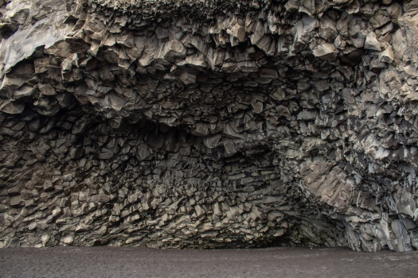
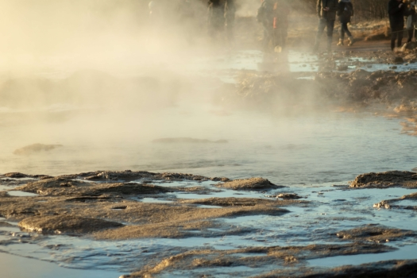

Although we didn’t see any volcanoes erupting on our visit, Iceland is renowned for its high level of volcanic activity. The above images were taken of the Fagradalsfjall eruption earlier this year (2021).
Iceland is situated where the North American and Eurasian tectonic plates meet, this makes for a lot of seismic activity. Seismologists can record hundreds and even thousands of earthquakes in a single day. Most of the quakes are too small to feel but an increase in seismic activity usually leads to volcanic eruptions. These eruptions contribute to Iceland’s ever-changing landscape.
The Elduhraun lava field located on the south side of the island is the result of an eruption in the late 1700s and is a sight to behold. The moss-covered lava covers around 560 square kilometres of Icelandic landscape.
Basalt columns can be found all over Iceland and are formed by lava flow cooling and forming a surface crust, this crust then cracks and as the lava underneath cools, the cracks continue down, forming columns.
This picture was taken on Reynisfjara beach. Nearby is basalt cave.
Geysers and hot springs are also common in Iceland. They’re formed as underground streams and rivers are boiled by magma heated bedrock. There are a few geysers regularly visited by tourists, though none are as reliable as the Strokkur geyser which erupts on average every 10 to 15 minutes and usually reaches heights of around 10 meters.
The Icelandic people have learned to harness the geothermal properties of the island and use the magma heated water to generate electricity, heat homes and even for bathing. This means many houses have no need for a boiler and the electricity is very cheap.
